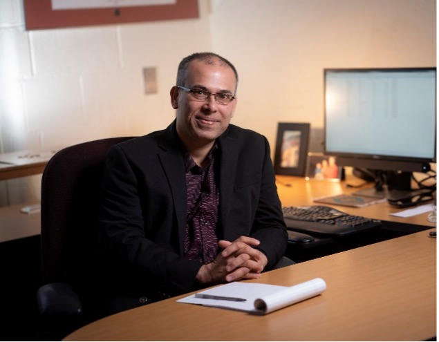
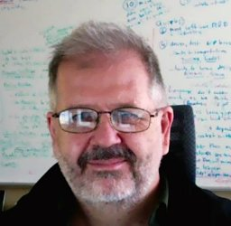
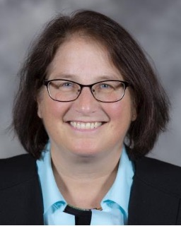
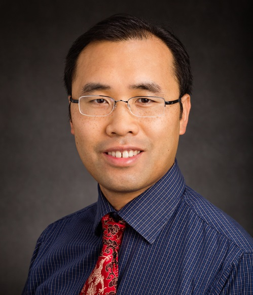
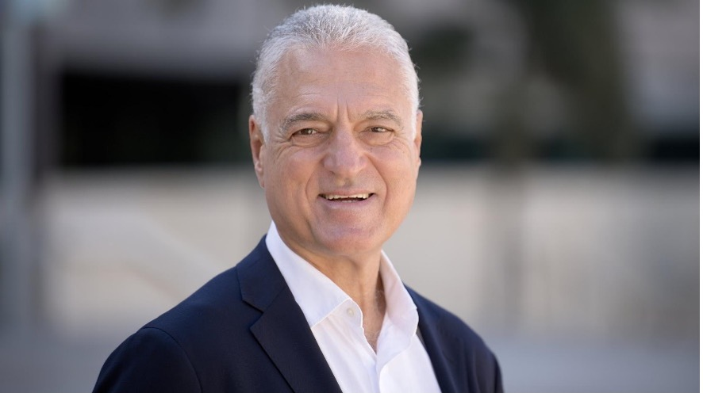
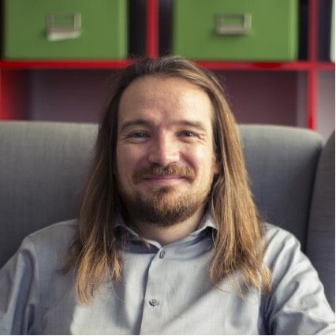

New Faculty Symposium
The ISSRE New Faculty Symposium has a goal to help new and prospective faculty members working in software reliability towards their (early) careers. This is challenging as new faculty members need to address myriad new challenges, typically beyond what they have been trained for in their doctoral studies, such as:
- Career management and promotion
- Networking
- Publication strategies
- Research funding
- Mentoring students
- Balancing teaching, service, and research
- Work-life balance and personal satisfaction
The New Faculty Symposium event will follow a similar formula of past symposia in the field of software engineering (at ISSRE, ICSE and other venues). The program will feature invited talks by senior members of the research community, and opportunities for open discussion on a broad range of aspects of faculty life. The event will also give special emphasis on the differences between countries and academic cultures, as they may present special challenges due to different evaluation criteria, fund granting schemes, teaching environments, etc. We especially welcome participation from early career and prospective faculty members, though the event is open to everyone.
New Faculty Symposium Program
Date: October 31 (Monday), 2022
8:25 - 8:30am EDT
Welcome & Introduction: Roberto Natella (University of Naples Federico II) and Qingwei Lin (Microsoft Research Asia)
8:30am - 9:15am EDT
Keynote - Tao Xie (Peking University): Training and Preparing PhD Students Toward Successful Post-PhD Careers
9:15am - 10:00am EDT
Keynote - Paulo Esteves-Veríssimo (KAUST): Everything your PhD Students Always Wanted to Know About Research* (*But Were Afraid to
Ask)
10:00am - 10:30am EDT
Break
10:30am - 11:15am EDT
Keynote - Saurabh Bagchi (Purdue University): How to have a Terrific or a Terrible Life During Your First Three Years as Faculty
11:15am - 12:00am EDT
Keynote - Tim Menzies (NC State University): Secrets of the Tenured Professor [slides here]
12:00am - 1:30pm EDT
Lunch break
1:30pm - 2:15pm EDT
Keynote - Myra Cohen (Iowa State University): Building a Collaborative Research Network
2:15pm - 3:00pm EDT
Keynote - Brendan Dolan-Gavitt (NYU Tandon): Do I Have to Stop Programming? The Plight of the "Hackademic"
3:00pm - 3:30pm EDT
Break
3:30pm - 5:00pm EDT
Free time slot for networking
Keynote Speakers

Saurabh Bagchi
Title: How to have a Terrific or a Terrible Life During Your First Three Years as Faculty
Abstract: In this talk, I will survey two archetypal Assistant Professors, call them Ayesha and Bhuv, one who is having a terrific time during his journey and the other not so much. I will discuss some common ingredients that contribute to a terrific time like Ayesha is having and what you can do proactively to move toward that operating point. I will also discuss how to avoid the pitfalls that have led Bhuv to regretting ever getting into academia. I will discuss three broad research strategies taken by early career faculty and my subjective take on their pros and cons. I will leave lots of time for discussion with the audience.
Bio: Saurabh Bagchi is a Professor in the School of Electrical and Computer Engineering and the Department of Computer Science at Purdue University in West Lafayette, Indiana, USA. He is the founding Director of a university-wide resiliency center at Purdue called CRISP (2017-present) and leads the Army's Assured Autonomous Innovation Institute (A2I2) at Purdue. He is a Fellow of the Institute of Engineering and Technology (IET) and the recipient of the Alexander von Humboldt Research Award (2018). He serves on the IEEE Computer Society Board of Governors and is a selected member of the International Federation for Information Processing (IFIP). Saurabh's research interest is in distributed systems and dependable computing. He is proudest of the 24 PhD and about 50 Masters thesis students who have graduated from his research group and who are in various stages of building wonderful careers in industry or academia. In his group, he and his students have far too much fun building and breaking real systems for the greater good. Saurabh received his MS and PhD degrees from the University of Illinois at Urbana-Champaign and his BS degree from the Indian Institute of Technology Kharagpur, all in Computer Science. He is the co-founder and CTO of a cloud computing startup, KeyByte (2021).

Tim Menzies
Title: Secrets of the Tenured Professor
Abstract: Sssh. I can't tell you. It's a secret. But I'm a tenured full professor in SE with 30 years of tricks to share. Wanna hear?
Bio: Tim Menzies (IEEE Fellow, Ph.D., UNSW, 1995) is a full Professor in CS at North Carolina State University where he teaches software engineering, automated software engineering, and foundations of software science. He is the directory of the RAISE lab (real world AI for SE). that explores SE, data mining, AI, search-based SE, and open access science.
He is the author of over 280 referred publications and editor of three recent books summarized the state of the art in software analytics. In his career, he has been a lead researcher on projects for NSF, NIJ, DoD, NASA, USDA (funding totalling over 12 million dollars) as well as joint research work with private companies. For 2002 to 2004, he was the software engineering research chair at NASA's software Independent Verification and Validation Facility.
Prof. Menzies is the co-founder of the PROMISE conference series devoted to reproducible experiments in software engineering (http://tiny.cc/seacraft). He is an associate editor of IEEE Transactions on Software Engineering, Communications of the ACM, ACM Transactions on Software Engineering Methodologies, Empirical Software Engineering, the Automated Software Engineering Journal the Big Data Journal, Information Software Technology, IEEE Software, and the Software Quality Journal. In 2015, he served as co-chair for the ICSE'15 NIER track. He has served as co-general chair of ICSME'16 and co-PC-chair of SSBSE'17, and ASE'12.

Myra Cohen
Title: Building a Collaborative Research Network
Abstract: Collaborative research can be rewarding, providing novel technical challenges, and unlocking doors to increased impact. However, there are some pitfalls to setting up successful collaborations and as a (junior) faculty member this can be hard to navigate. In this talk I will discuss some of my experiences with collaborative projects and share how I navigate the risks and rewards of this landscape using a collaboration pyramid. I end with some techniques for starting successful collaborations as well as a set of warning signs to watch out for.
Bio: Myra Cohen is a Professor and the Lanh and Oanh Nguyen Chair in Software Engineering in the Department of Computer Science at Iowa State University. Prior to that she was a Susan J. Rosowski Professor at the University of Nebraska-Lincoln where she was a member of the ESQuaReD software engineering research group. She received her Ph.D. from the University of Auckland , New Zealand , where she lectured in the Computer Science and Software Engineering programs. She received her M.S. from the University of Vermont where she also spent several years as a Lecturer in the Computer Science Department. She received her B.S. from the School of Agriculture and Life Sciences at Cornell University.
Her research interests are in software testing of highly-configurable software, search based software engineering, applications of combinatorial designs, and synergies between systems and synthetic biology, and software engineering. She is the recipient of an NSF CAREER award, an AFOSR Young Investigator Award and was a member of the DARPA Computer Science Study Group. She serves on many software engineering conference program committees and was the general chair of the IEEE/ACM International Conference on Automated Software Engineering (ASE) in 2015. She was the program co-chair for ICST 2019 and is the program co-chair of ESEC/FSE 2020. She is an ACM distinguished scientist.

Tao Xie (Peking University)
Title: Training and Preparing PhD Students Toward Successful Post-PhD Careers
Abstract: It is valuable for PhD students to think ahead on what kinds of post-PhD career paths the students intend to seek and what kinds of skills such career paths would require the students to have. This talk will discuss important skills that a PhD researcher is typically expected to attain: Assessment, Vision, Design, Execution, and Communication (in short as AVDEC) skills. This talk will also discuss lessons learned from training and preparing PhD students toward successful post-PhD careers.
Bio: Tao Xie is a Peking University Chair Professor, and a Foreign Member of Academia Europaea, a Fellow of ACM, IEEE, AAAS, and China Computer Federation (CCF). He won an Xplorer Prize, NSF Faculty CAREER Award, ACM SIGSOFT Distinguished Service Award, IEEE TCSE Distinguished Service Award, MSR Foundational Contribution Award, TSE 2018 Best Paper Award, ASE 2021 Most Influential Paper Award, etc. He serves/served as a Program Co-Chair of ICSE 2021 and Co-Editor-in-Chief of Wiley Journal of Software Testing, Verification and Reliability (STVR), etc.

Paulo Esteves-Veríssimo (KAUST - King Abdullah University of Science and Technology)
Title: Everything your PhD Students Always Wanted to Know About Research* (*But Were Afraid to Ask)
Abstract: The talk will digress around what is really competitive scientific research in academia --- disclaimer: my view --- in what might be seen as a concise Research Book of Style for young faculty, as seen from their mentored students viewpoint. Drawing from my experience, I will try to tackle doubts and dilemmas they are both often faced with, in their path towards respectively, career progress, and a degree. I will end sharing my own --- and perhaps surprising --- definition of the ultimate goal of a premier league researcher: 'excellence'.
Bio: Paulo Esteves-Veríssimo is since November 2020 a professor at KAUST, and Director of the Resilient Computing and Cybersecurity Center (RC3). Previously, he has been a professor and FNR PEARL Chair at the University of Luxembourg FSTM, and Head of the CritiX Research Lab at SnT center at the same University. CritiX has achieved world-class results and enduring capacity of research in resilient computing, cybersecurity and dependability. Previously, he had also been a Professor of the University of Lisbon (Portugal) and Member of the Board of the same university. There, he created the Navigators research group and was later founding Director of LaSIGE in 1998, a computer science and engineering lab, whose research in cutting-edge areas has consistently been backed by key indicators of excellence until today.
He was the representative of UNILU-SnT in ECSO, the European Cyber Security Organization, and member of its Scientific & Technical Committee (STC), as well as Chair of the IFIP WG 10.4 on Dependable Computing and Fault-Tolerance and vice-Chair of the Steering Committee of the IEEE/IFIP DSN conference. He is Fellow of the IEEE and Fellow of the ACM, and associate editor of IEEE Transactions on Emerging Topics in Computing (TETC).

Brendan Dolan-Gavitt
Title: Do I Have to Stop Programming? The Plight of the "Hackademic"
Abstract: As a new assistant professor, one of my (many!) fears was that the demands of advising, teaching, service, grant management, etc. would leave me with no time to do technical systems work. In this talk, I will argue that it is possible and even beneficial to continue to do hands-on technical work like programming as an early career researcher, but that it will not necessarily look like what you did as a PhD student. Continuing to do technical work has many benefits, including: 1) being able to provide direct assistance to your students when they hit hard technical problems; 2) allowing you to explore new or risky ideas that aren't yet mature enough for a PhD student to take on; and 3) creating infrastructure and materials for teaching and research that can be re-used by others. I'll also try to give some tips on how to fit this work in among the many other obligations early career researchers have.
Bio: Brendan Dolan-Gavitt is an Assistant Professor in the Computer Science and Engineering Department at NYU Tandon. He holds a Ph.D. in computer science from Georgia Tech (2014) and a BA in Math and Computer Science from Wesleyan University (2006).
Dolan-Gavitt's research interests span many areas of cybersecurity, including program analysis, virtualization security, memory forensics, and embedded and cyber-physical systems. His research focuses on developing techniques to ease or automate the understanding of large, real-world software systems in order to develop novel defenses against attacks, typically by subjecting them to static and dynamic analyses that reveal hidden and undocumented assumptions about their design and behavior.
His work has been presented at top security conferences such as the ACM Conference on Computer and Communications Security (CCS) and the IEEE Symposium on Security and Privacy. He also led the development of PANDA, an open-source platform for architecture-neutral dynamic analysis, which has users around the world and has been featured in technical press such as The Register. His most recent work, which focuses on developing techniques to probe industrial control systems for vulnerabilities, has been funded by the Office of Naval Research. Prior to joining NYU, he was a postdoctoral researcher at Columbia University.